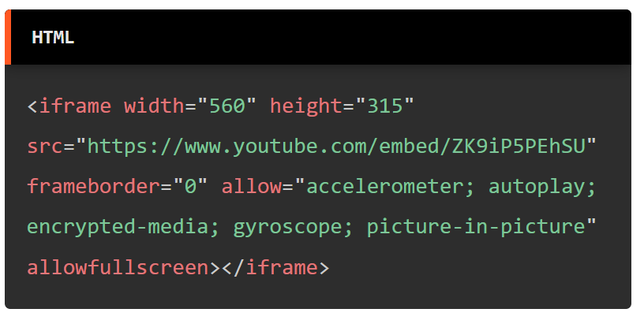

MANUAL DE HTML

| CONTENIDOS |
|---|
| Introducción |
La etiqueta <iframe> |
Videos
Los videos son una forma de presentar contenido multimedia en la web. Estos no solo forman parte de plataformas como lo es YouTube, sino también de sitios web con propósitos de aprendizaje, tiendas, empresas, entre otras. Con el propósito de que los usuarios puedan interactuar con el contenido, ya que videos pueden ser una herramienta de aprendizaje, de atracción al cliente y de comunicación. Y claramente HTML, no se queda fuera sobre como implementarlos en las páginas web de manera simple.

La etiqueta <iframe>
El elemento HTML <iframe> (de inline frame) representa un contexto de navegación anidado,
el cual permite incrustrar otra página HTML en la página actual.
Este elemento es una forma de presentar contenido multimedia en la web.
Que además no tiene que formar parte de nuestro sitio web, sino que
puede formar parte de una página web externa.
Esta etiqueta cuenta con atributos simples, pero aún así cada una de ellas
cuenta con sus propias propiedades individuales.
Los atributos comunes en esta etiqueta son:
- src
- height
- width
- title
- allow
src es un atributo obligatorio, que contiene la dirección de la página web que se desea incrustar. height es un atributo opcional, que contiene el alto de la ventana del video. width es un atributo opcional, que contiene el ancho de la ventana del video. title es un atributo opcional, que contiene el título de la ventana del video. allow es un atributo opcional, que contiene el tipo de contenido multimedia que se desea permitir.
El ejemplo más simple para insertar un elemento multimedia como un video es el siguiente:
